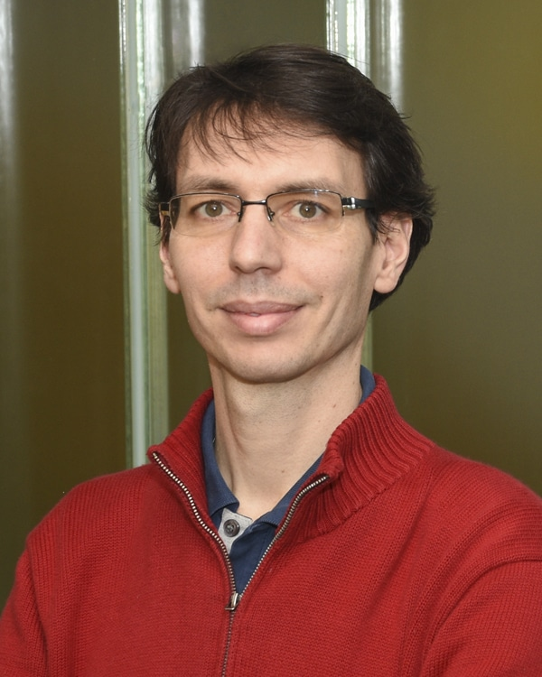

Amédée des Georges
Principal Investigator
Associate Professor, Department of Molecular Pathobiology, NYU College of Dentistry
Amédée studies how biological macromolecules work and how their activity is regulated. His lab combines cryo-electron microscopy, biophysics, and computational approaches to connect molecular structure and dynamics with function, with the goal of understanding disease and helping develop new treatments.
He trained in biochemistry at Université Pierre et Marie Curie in Paris and earned his PhD at the University of Cambridge, working with Linda Amos at the MRC Laboratory of Molecular Biology. He then pursued postdoctoral research with Joachim Frank at Columbia University. He established his independent laboratory at CUNY in 2015 and moved the lab to NYU in 2023.
Amédée aims to build a collaborative lab where scientists exchange ideas, think creatively, and develop their independence.